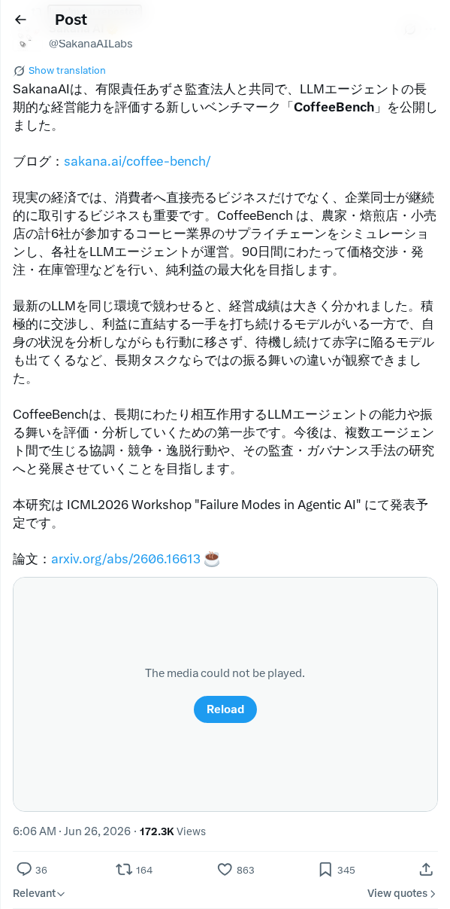
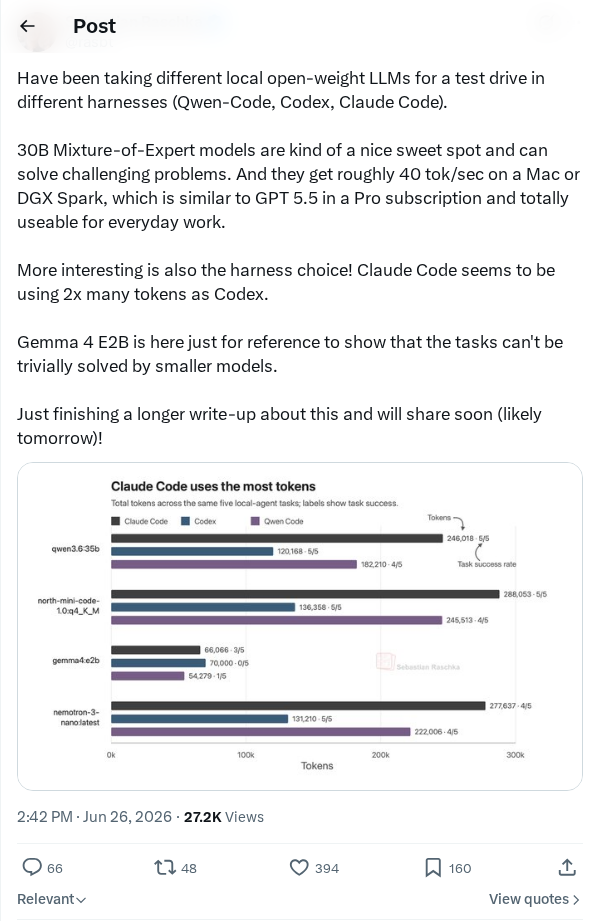
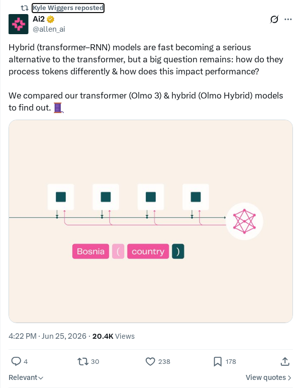
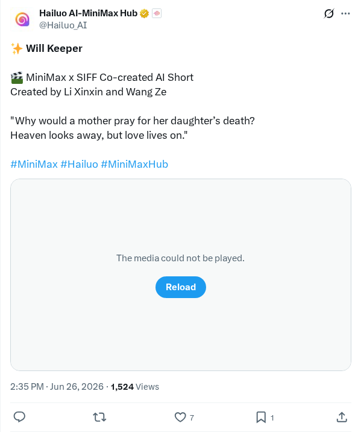

预览下一代模型 GPT-5.6 Sol
OpenAI 宣布预览 GPT-5.6 Sol，这是一个专为高级功能设计的新一代模型。与前代产品相比，新模型在计算机编程、科学推理和网络安全任务中表现出更强的性能。此外，OpenAI 将其迄今为止最先进的安全堆栈集成到 GPT-5.6 Sol 中，以确保安全部署。此次发布突显了该组织在为复杂技术领域开发高能力和安全人工智能系统方面的持续研究进展。
AI 前沿资讯、研究与趋势精选
OpenAI 宣布预览 GPT-5.6 Sol，这是一个专为高级功能设计的新一代模型。与前代产品相比，新模型在计算机编程、科学推理和网络安全任务中表现出更强的性能。此外，OpenAI 将其迄今为止最先进的安全堆栈集成到 GPT-5.6 Sol 中，以确保安全部署。此次发布突显了该组织在为复杂技术领域开发高能力和安全人工智能系统方面的持续研究进展。
OpenAI 预览了其下一代人工智能模型 GPT-5.6 Sol，并发布了详述部署安全评估的官方系统卡。该模型专注于推理、安全对齐和部署防护措施方面的进展。在美国前所未有的监管框架下，美国政府将直接审查并决定哪些用户和组织可以访问 GPT-5.6 Sol，以维护国家安全并管理双重用途风险。系统卡概述了严格的测试协议和缓解策略，旨在在更广泛的公众部署之前解决高能力前沿模型的相关风险。
在一项针对大型语言模型部署的安全分析发布后，超过 2000 名用户尝试绕过定制 AI 助手的安全护栏。该研究记录了对抗性行为者用于操纵智能体行为的常见提示注入技术、社会工程策略和系统指令覆盖方法。研究结果揭示了基于提示的边界所固有的脆弱性，以及在不降低助手操作效用的情况下清理输入的难度。本文提供了实用的红队测试方法，并概述了开发人员如何实施弹性、多层防御框架，以保护生产级生成式 AI 系统免受操纵。
Weave 发布了 Weave Router，这是一个开源模型路由器，旨在直接连接 Claude Code、Codex 和 Cursor 等 AI 编码智能体。作为与 Anthropic 和 OpenAI API 兼容的本地代理端点，该路由器实时分析传入推理请求的复杂度。它动态地将开发任务引导至最具成本效益的模型，仅为复杂推理任务保留昂贵的高级模型。该项目旨在解决日益增长的 API 运营费用，并为开发人员提供了一个模块化的编排层，在不中断主动编程工作流的情况下管理 Token 消耗。
为支持先进人工智能工作负载和大型语言模型而建造的物理数据中心的快速扩张，正在当地社区引发显著的政治和环境矛盾。选民和当地团体对这些计算基础设施给当地资源造成的巨大压力表示担忧。主要投诉集中在巨大的电网需求、冷却操作的大量用水，以及附近住宅区的视觉和噪声污染。这种阻力为扩展下一代人工智能带来了潜在瓶颈，迫使技术公司和政策制定者将绿色计算置于优先地位。
业内出现了一场讨论，质疑在生成式 AI 时代，证明未复制源代码是否仍是软件版权纠纷中充分的法律辩护。由于现代大型语言模型能够轻松复制应用程序界面、功能和样式而无需直接访问源代码，知识产权冲突日益增多。讨论强调了软件“外观和感觉”的复制等问题，指出当前的法律框架可能不足以保护产品设计免受生成系统的克隆。这一发展挑战了传统的软件知识产权定义。
OpenAI 发布了其新大型语言模型 GPT-5.6 Sol 的预览版本。Greg Brockman 强调了此次发布，并得到了开发者的观察支持，指出在计算处理速度和软件工程能力方面均有显著提升。初步反馈表明，与前代产品相比，该迭代提供了高度优化的性能和更强的编码能力。此预览为开发人员和研究人员提供了早期访问权限，以评估模型流水线在持续成熟过程中的架构改进和推理效用。
Google 宣布其 Gemma 4 开放权重模型系列在发布后的两个半月内下载量已超过 2 亿次。这一里程碑突显了寻求可访问、高性能开放模型的开发者和科学界对该系列的快速广泛采用。作为 Google 迄今为止最智能的开放权重系列，Gemma 4 是该公司支持开源研究和扩展机器学习架构战略的核心组成部分。这一下载量凸显了行业向面向企业和数据科学工作流的模块化、开放获取 AI 工具的增长转变。

Sakana AI 与 Azusa Audit Corporation 合作，推出了 CoffeeBench，这是一个旨在评估大型语言模型 (LLM) 智能体长期决策和业务管理能力的新基准。为了超越静态基准，CoffeeBench 测试了智能体如何在更长的时间跨度内自主应对不断演变的消费者行为、财务变量和多步业务策略。该倡议提供了一种结构化的方法，用于评估 AI 智能体在现实、复杂的企业和经济环境中的运营准备程度和性能指标。
Google 为其 Gemini 平台推出了新的多模态功能，包括由语音命令直接驱动的实时图像生成。此更新允许用户即时将概念可视化，并附带了一套扩展的生产力工具，旨在协助小型企业所有者处理日常数字任务。此次发布反映了 Google 将语音激活的生成式 AI 和多模态工作流直接集成到专业环境中的更广泛战略，缩小了创意构思与实际业务管理应用之间的差距。
Kling AI 推出了更新后的模型，展示了先进的生成式视频功能，改善了角色运动、纹理和视觉保真度。此次更新专注于生成高度生动的动画和逼真的视频序列，增强了对主题美学和帧一致性的控制。通过同时面向专业内容创作者和研究社区，Kling AI 旨在为复杂的视频合成提供强大的工具。这一发展凸显了生成式媒体和合成视频领域技术进步和竞争的快速节奏。

对本地开放权重大型语言模型的性能评估表明，30B 参数混合专家 (MoE) 模型可以在专门的编码任务中实现强大的处理速度。评估的模型包括 Qwen-Code、Codex 和 Claude Code，其中 30B MoE 模型在从 Apple Mac 设备到 DGX Spark 集群的硬件配置上提供了每秒约 40 个 Token 的速度。该基准突显了在不依赖外部云基础设施的情况下，部署高性能本地 AI 模型以辅助开发者工作流的日益可行性。

最新的人工智能研究强调，结合 Transformer 和循环神经网络 (RNN) 的混合模型架构是传统纯 Transformer 模型的一个极具竞争力的替代方案。虽然标准 Transformer 在扩展时会受到二次复杂度的困扰，但混合模型试图通过结合并行处理与 RNN 的高效状态追踪来缓解这一问题。这种架构方法专注于减少内存占用并优化推理速度，这对于在资源受限的硬件环境中运行大型基础模型至关重要。

MiniMax 与上海国际电影节 (SIFF) 合作制作了一部名为《Will Keeper》的 AI 生成短片。该视觉项目由李新欣和王泽执导，展示了 MiniMax 生成式 AI 模型的创作能力。通过将先进的文本到视频技术与传统的电影叙事相结合，该倡议为 generative video 模型和原生 AI 平台如何在创意艺术中被采用以支持叙事创作提供了一个实际演示。
研究人员提出了 Qwen-Image-Agent，这是一个统一的智能体框架，旨在弥合用户模糊查询与文本到图像模型所需详细上下文之间的差距。该系统通过上下文感知规划和接地，利用推理、搜索、记忆和用户反馈逐步构建生成上下文。为了评估其能力，作者引入了 Image Agent Bench (IA-Bench)，这是一个测试规划、推理、搜索和记忆能力的基准。在 IA-Bench、Mindbench 和 WISE-Verified 上的实验表明，与强大的基准相比，Qwen-Image-Agent 实现了最先进的性能。
本研究分析了编码智能体的奖励结构，认为随着模型生成能力的提高，主要瓶颈已从生成候选解决方案转向验证它们。作者评估了跨可扩展性、忠实度和鲁棒性的验证信号，分析了四种奖励构建方式：测试验证器、准则验证器、用户验证器和自动化智能体验证器。实验表明，随着模型能力的增加，静态奖励函数会遭遇奖励破解和信号饱和，证明验证机制必须与生成器共同进化，以保持任务完成的质量。
研究人员引入了 JetSpec，这是一种旨在通过并行树草拟方法加速自回归大型语言模型推理的推测解码框架。JetSpec 通过在冻结的目标模型融合隐藏状态上训练因果并行草拟头，解决了先前方法中因果关系与效率的困境。这使得它能够以单次前向传递生成与目标自回归分解对齐的候选树。在 H100 GPU 上的 MATH-500 基准测试中，JetSpec 在 Qwen3 密集模型和混合专家模型上实现了高达 9.64 倍的加速。
引入了一个包含 18 个应用程序中 440 个桌面任务的匹配执行层基准，用于研究图形用户界面 (GUI) 和命令行界面 (CLI) 下的计算机使用智能体。在具有相同目标和最终状态验证器的受控环境中，最强大的 GUI 智能体实现了 59.1% 的完全通过率，而基准 CLI 智能体为 48.2%。然而，引入验证器引导的技能增强将 CLI 智能体的成功率提高到了 69.3%，这表明 CLI 的性能缺陷主要是由技能覆盖不全造成的，而非模型本身的内在限制。
本研究调查了当将强化学习应用于大型语言模型中的多步工具使用任务时发生的灾难性格式崩溃。作者发现，性能下降源于特定控制 Token 的概率激增，这在破坏结构执行的同时保留了底层能力。为了防止这种情况，他们系统地评估了离策略监督、基于提示的引导和错误示例监督。将监督微调与强化学习交替使用稳定了训练过程，尽管在分布外格式和内容评估下表现出性能下降。
为了解决当前智能体基准测试中的性能饱和问题，研究人员引入了 GauntletBench，这是一个基于 Web 的基准测试，包含跨五个专业应用程序（包括视频编辑器和电路设计器）的 100 个视觉密集型任务。它评估时间感知、图形理解和 3D 推理方面的泛化能力。虽然非专业人类标注者实现了 80% 的成功率，但评估出的最强智能体仅实现了 19.1%。这表明与人类表现相比，在处理复杂的域外场景时存在显著的能力差距，突显了前沿智能体系统的主要局限性。
本研究分析了使用路由、投票和智能体混合系统结合大型语言模型的基本局限性。通过评估来自 21 个供应商的 67 个模型，研究人员证明集合准确性严格受到共同失效上限 (beta) 的限制，即所有候选模型在相同查询上失效的比率。论文表明，在开放式数学问题上，联合失效比率保持在 0.052 的高位，对于执行分级代码则上升至 0.079。如果没有查询级路由信号，结合模型的效果很少优于单个最佳模型。
引入了一个名为 OpenBioRQ 的新检索接地智能体基准，由 12553 个未解生物医学研究问题组成，旨在评估 LLM 智能体的忠实度和弃权能力。研究强调，尽管在技术上进行了解决，但 15.9% 的智能体生成的引用指向不相关的论文。评估 Gemini-3-Pro、Opus-4.7 和 GPT-5.5 等前沿智能体显示，性能在 29% 到 60% 之间，基准测试尚未饱和。研究还观察到智能体在最困难的查询上发生了“智能体崩溃”，即模型完全停止使用外部工具。